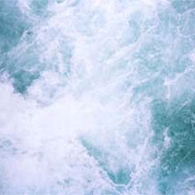
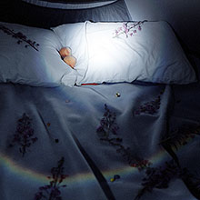
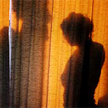

|  |  |  |
exhibition archivehintby Jodie Vicenta Jacobson May 10 - July 31, 2008 images above from left to right: Details of Huka Falls, Peaches, and GoldenC-Prints, 30 x 40 inches |
The wild project, a new contemporary arts space, is pleased to present its inaugural exhibition, hint, an installation of photographs and videos by Jodie Vicenta Jacobson. Making pictures involving diverse subject matter, the artist’s thoughtful treatment of tender fruits, illuminated shadows and entangled limbs reveals a sensual, poetic sensibility. In Peaches, nestled between pillows, two luminous fruits touch, encircled by a curved spectrum of refracted light. The image communicates how a chance phenomenon can be transformed to evoke beauty’s dark side. In her video work, The Vale, the artist frames mist as it slowly traverses a New Zealand valley, intensifying and diminishing to the soundtrack of the environment. Jacobson’s instinctual images give the impression of a deeply felt personal experience infused with a quiet appreciation of the darkness, hidden sensuality, and grandeur of the natural world. |
The ArtistBorn in western Colorado, currently working in Brooklyn, Jodie Vicenta Jacobson is both an artist and a curator. She exhibits widely in New York, Europe, and Japan. In 2004, she received her MFA from Hunter College. She was included in Greater New York, 2005 at PS1/MoMA and currently her work is on view at the Albright-Knox Museum in Buffalo, NY as part of an exhibition of recent acquisitions. Her work has been mentioned and featured in such publications as the New Yorker, The New York Times, ARTFORUM and Blind Spot magazine. A book of her pictures will be published by FOIL Gallery, Tokyo in 2009. A portion of the proceeds of this exhibition will be donated to Brooklyn Center for the Urban Environment. |
exhibition archive |
|||
| 2016 | 2015 | 2014 | 2013 |
| 2011 | 2010 | 2009 | 2008 |